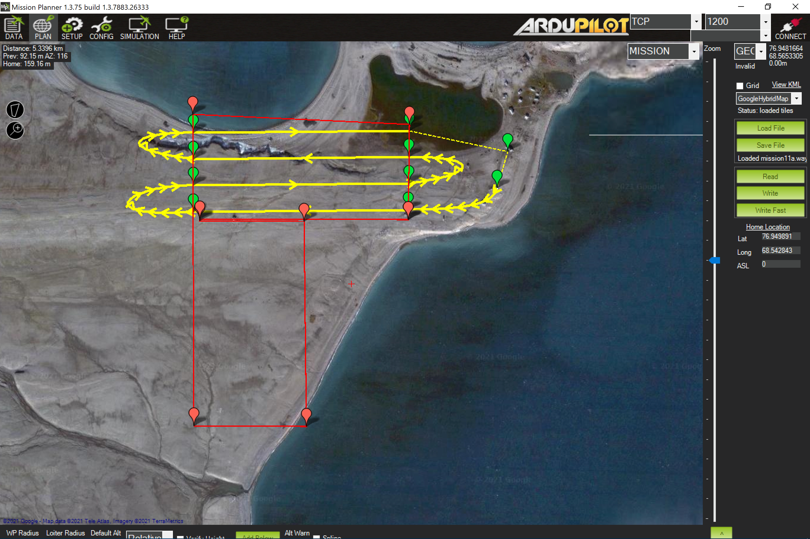
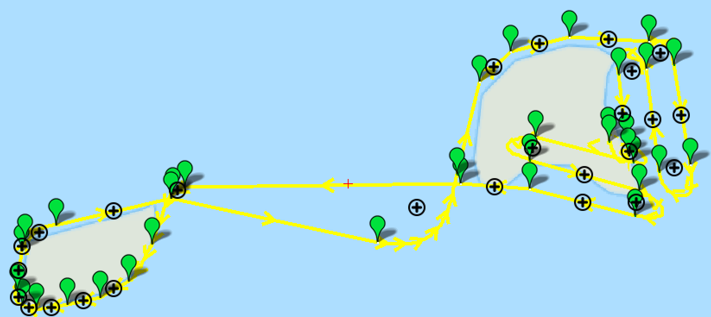

layout: true .banner[ <img src="https://nplatonov.github.io/misc/20230316/assets/sevin.jpg" width="1330" height="180" bound style="display: block; margin: auto;" /> .shorttitle[ ] ] --- class: metadata customtitle middle left name: H3216 <iframe width='220' height='220' class='timenow' src='https://www.timeanddate.com/worldclock/fullscreen.html?n=1440' frameborder='0' allow='encrypted-media' allowfullscreen></iframe> .sidebar.left-column[ # [Особенности эксплуатации](#H4dc0) # [Обязанности пилотов](#Hf096) # [Актуальное состояние](#H9fc9) # [Задачи](#Hb760) # [Ограничения](#Hbca4) # [Перспективы](#He1cb) ] .mainbar.right-column[ .author[Никита Платонов] .institute[ИПЭЭ РАН] .title[Комплекс «Optiplane S2» в ИПЭЭ РАН] .subtitle[] .what[Презентация «Оптиплейн S2»] .where[ИПЭЭ РАН] .when[2023-03-30 .updated[Обновлено: 2023-03-29 16:14]] ] --- name: H4dc0 .sidebar.left-column[ # [Особенности эксплуатации](#H4dc0).fg[].bg[] # [Обязанности пилотов](#Hf096) # [Актуальное состояние](#H9fc9) # [Задачи](#Hb760) # [Ограничения](#Hbca4) # [Перспективы](#He1cb) ] .mainbar.right-column[ + Программирование маршрутов и режима съемки + Программное обеспечение: MissionPlanner + Полет согласно предварительно заложенному маршруту + Плановое проведение фотосъемки + Оперативное изменение маршрута  ] --- name: Hf096 .sidebar.left-column[ # [Особенности эксплуатации](#H4dc0) # [Обязанности пилотов](#Hf096).fg[].bg[] # [Актуальное состояние](#H9fc9) # [Задачи](#Hb760) # [Ограничения](#Hbca4) # [Перспективы](#He1cb) ] .mainbar.right-column[ .pulling[ .pull-left-60[ + Снятие с хранения, отправка на хранение + Согласование использования воздушного пространства с ЕС ОрВД<sup><a href=#fn>1</a></sup><span id=ref1></span> + Разработка полетного задания + Прохождение процедуры офисной проверки + Обеспечение работы комплекса + Прохождение процедуры стартовой проверки + Выполнение полетов + Прохождение послеполётных процедур ] .pull-right-40[ <video height="480" autoplay="1" loop="1" controls="1"> <source src="assets/compass.mp4" type="video/mp4"/> </video> .small[ [Видео](https://t.me/c/1635085609/132): Владимир Литвинов ] ] ] ] --- name: H9fc9 .sidebar.left-column[ # [Особенности эксплуатации](#H4dc0) # [Обязанности пилотов](#Hf096) # [Актуальное состояние](#H9fc9).fg[].bg[] # [Задачи](#Hb760) # [Ограничения](#Hbca4) # [Перспективы](#He1cb) ] .mainbar.right-column[ + В ИПЭЭ РАН один экземляр "Оптиплейн S2", с ноября 2021 г. + Аппарат (беспилотное воздушное судно) поставлен на учет в Росавиации<sup><a href=#fn>2</a></sup><span id=ref2></span> + Полезная нагрузка + Фотокамера Sony A7 + Видеокамера Fly-per-view + Тепловизор Fly-per-view + Прошли обучение и получили сертификаты пилотов: + Роберт Сандлерский + Дмитрий Иванов + Иван Котлов + Никита Платонов ] --- name: Hb760 .sidebar.left-column[ # [Особенности эксплуатации](#H4dc0) # [Обязанности пилотов](#Hf096) # [Актуальное состояние](#H9fc9) # [Задачи](#Hb760).fg[].bg[] ## [отловы белого медведя](#Had52) # [Ограничения](#Hbca4) # [Перспективы](#He1cb) ] .mainbar.right-column[ + Обследование труднодоступных объектов + Проведение мониторинга <div class="figure"> <div class="framed" style="height:300px; width=100%"> <iframe src="assets/widget_unnamed-chunk-3_de400c495caf3726f32113ccdd9f9150.html" width="100%" height="300" class="ursa-widgetize"></iframe> </div> </div>  ] --- class: middle name: Had52 .sidebar.left-column[ # [Особенности эксплуатации](#H4dc0) # [Обязанности пилотов](#Hf096) # [Актуальное состояние](#H9fc9) # [Задачи](#Hb760).fg[] ## [отловы белого медведя](#Had52).fg[].bg[] # [Ограничения](#Hbca4) # [Перспективы](#He1cb) ] .mainbar.right-column[ .pulling[ .pull-left-40[ + Проверка вскрытия берлог, появления свежих следов + Обследование ландшафтов за линией горизонта + Оценка разрушенности припайного льда ] .pull-right-60[ <img src="https://nplatonov.github.io/misc/20230316/assets/hv-20210419-0426.png" width="1330" height="568" aspect style="display: block; margin: auto;" /> ] ] ] --- class: middle name: Hbca4 .sidebar.left-column[ # [Особенности эксплуатации](#H4dc0) # [Обязанности пилотов](#Hf096) # [Актуальное состояние](#H9fc9) # [Задачи](#Hb760) # [Ограничения](#Hbca4).fg[].bg[] # [Перспективы](#He1cb) ] .mainbar.right-column[ + Дальность и автономность полёта + Громоздкость комплекса по сравнению с бытовыми БПЛА + Нет возможности преследования животных из-за отсутствия управления в режиме реального времени + Сокращенный состав экипажа в составе экспедиционной группы ] --- class: middle name: He1cb .sidebar.left-column[ # [Особенности эксплуатации](#H4dc0) # [Обязанности пилотов](#Hf096) # [Актуальное состояние](#H9fc9) # [Задачи](#Hb760) # [Ограничения](#Hbca4) # [Перспективы](#He1cb).fg[].bg[] ] .mainbar.right-column[ + ИПЭЭ РАН заинтересован в обучении пилотов + Полезная нагрузка: мультиспектральная камера + Формулирование научных задач, решаемых беспилотным комплексом ] --- class: bottom right name: Hbe84 .sidebar.left-column[ # [Особенности эксплуатации](#H4dc0) # [Обязанности пилотов](#Hf096) # [Актуальное состояние](#H9fc9) # [Задачи](#Hb760) # [Ограничения](#Hbca4) # [Перспективы](#He1cb) ] .mainbar.right-column[ [<svg aria-hidden="true" role="img" viewBox="0 0 512 512" style="height:1em;width:1em;vertical-align:-0.125em;margin-left:auto;margin-right:auto;font-size:inherit;fill:currentColor;overflow:visible;position:relative;"><path d="M320 0c-17.7 0-32 14.3-32 32s14.3 32 32 32h82.7L201.4 265.4c-12.5 12.5-12.5 32.8 0 45.3s32.8 12.5 45.3 0L448 109.3V192c0 17.7 14.3 32 32 32s32-14.3 32-32V32c0-17.7-14.3-32-32-32H320zM80 32C35.8 32 0 67.8 0 112V432c0 44.2 35.8 80 80 80H400c44.2 0 80-35.8 80-80V320c0-17.7-14.3-32-32-32s-32 14.3-32 32V432c0 8.8-7.2 16-16 16H80c-8.8 0-16-7.2-16-16V112c0-8.8 7.2-16 16-16H192c17.7 0 32-14.3 32-32s-14.3-32-32-32H80z"/></svg>](./slideshow.html#schedule) ] --- name: fn hide: true .sidebar.left-column[ # [Особенности эксплуатации](#H4dc0) # [Обязанности пилотов](#Hf096) # [Актуальное состояние](#H9fc9) # [Задачи](#Hb760) # [Ограничения](#Hbca4) # [Перспективы](#He1cb) ] .mainbar.right-column[ .footnote.small[ **** 1. Единая система огранизации воздушного движения 2. Федеральное агентство воздушного транспорта ] ]